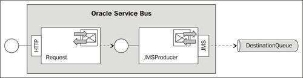
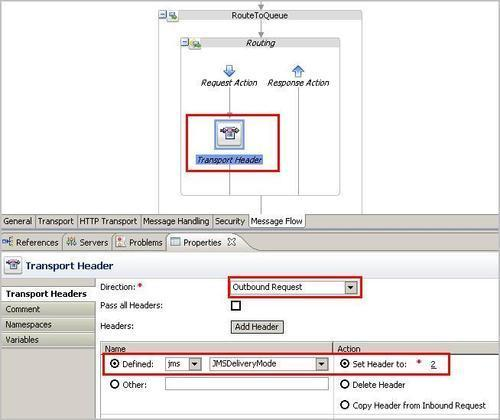
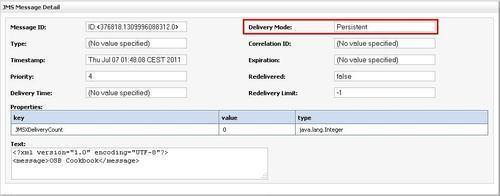
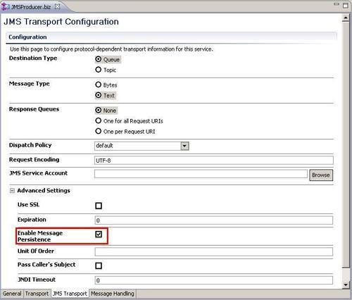

When we send messages to a JMS queue, the Message Delivery Mode option controls if a message is guaranteed to be delivered once, and if it is safely stored in the persistent store of the JMS server. There is also a non persistent option, where the messages are stored in memory and may be lost in case of a WebLogic or JMS server failure, or when the WebLogic server is rebooted.
In this recipe, we will set the delivery mode option on a JMS message with the OSB Transport Header action.
For this recipe, we will use a simple OSB project with one proxy and one business service:

You can import the OSB project into Eclipse from \chapter-10\getting-ready\enabling-jms-message-persistence.
In OPEP, perform the following steps:
2 into the Set Header to field (1 = non-persistent and 2 = persistent).
By adding the Transport Header action into the message flow we are able to define the delivery mode of the JMS queue. By setting the JMSDeliveryMode to 2 we are defining that the messages should be persistent.
We can easily check the result by invoking the proxy service with a test message and then browsing the message through the WebLogic console.
To invoke the proxy service, perform the following steps through the service bus console:
proxy folder inside the enabling-jms-message-persistence project.<message>OSB Cookbook</message> into the Payload field and click on Execute.To browse for the message inside the DestinationQueue, perform the following steps through the WebLogic console:

With a Transport Header action, we can set the transport-specific (header) properties on the business service. In case of a JMS business service, you can use the predefined JMS header properties. These JMS properties will be used when the business service sends a message to the queue.
We can also override the delivery mode in WebLogic, which takes precedence over all the settings that the producer of the message specifies in the delivery mode.
In WebLogic Console, perform the following steps to override the delivery mode:
Even if the producer of the message specifies the non-persistent delivery mode, the message will be made persistent due to the override.
If we don't override the delivery mode in WebLogic, we can define it on the JMS Transport tab of the business service. Just enable the Enable Message Persistence checkbox:

The Enable Message Persistence property on the business service will not override what we have set in a Transport Header action.